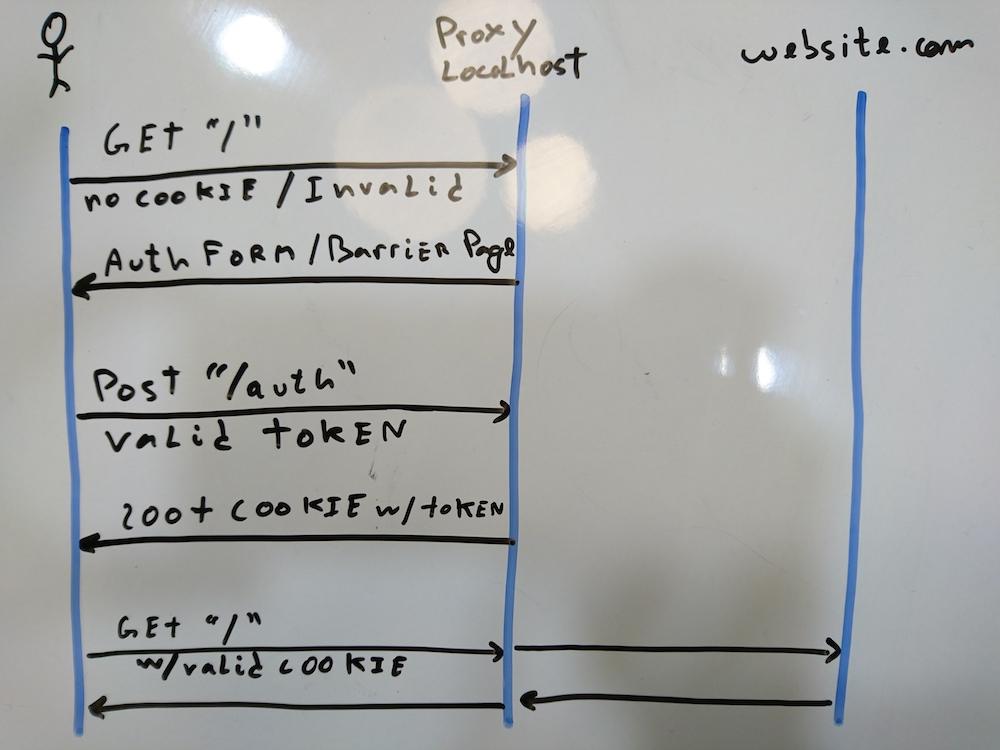

A development environment for a tricked out Nginx
TL,DR: A development flow based on an OpenResty Docker image that will make your life easier when scripting in Nginx. Clone, build, run and try it for yourself:
$ git clone git@github.com:fjsousa/openresty-smart-proxy.git$ cd openresty-smart-proxy/$ docker build -t nginx-barrier-page:latest .$ docker run -p 80:80 nginx-barrier-page:latest- Hit
localhostin your browser.
At Style.com, prior to our Setember 2016 launch, we published a Beta version of our website in May. We wanted to have a barrier page on the style.com domain, that would require an invitation token. If valid it would set a cookie with a token, that would be used in every following request to bypass the barrier page. The tokens could be invalidated and would expire after a certain time.
The business rules required a solution more sophisticated than what Nginx provided out of the box and this was the perfect oportunity to roll out Openresty with some Lua logic. OpenResty is an extended version of Nginx with a module that lets you embed Lua scripts. We had read of Lua + Openresty performance at Github and witnessed the small overhead Kong added to our requests. Also, Nginx was already part of our stack, acting as a reverse proxy and doing https offloading.
1 Basic OpenResty Setup
To start scripting in Nginx using Lua, you just need to download and compile OpenResty. Then, in your Nginx server configuration, you need to add a access_by_lua_file directive, and the path to the Lua file. Here's an example:
server {
listen 80;
server_name smartproxy
location / {
access_by_lua_file path/main.lua;
proxy_pass some.website.com;
}
}
This configuration would listen in port 80 and proxy some.website.com according to some custom logic in main.lua. This extra directive is the basic additional sintax you need to add to your existing Nginx server configuration. If your OpenResty is installed locally, you can start adding your Lua logic and you'll just have to restart Nginx to pick up the changes.
The setup works fine until you realize you have to go through the same setup in someone else's machine. After spending more time than you'd like to admite trying to get OpenResty compilation flags right, containerization starts to seem like something that would solve a lot of the development problems, instead of being just an extra setup for deployment.
2 Dockerfile
I've prepared an OpenResty base image based on Alpine Linux. The image has around 17 MB and is based on this other OpenResty Image, but with LuaRocks, Lua's package manager, and an up to date version of OpenResty. This is the breakdown of the Dockerfile. You can find the complete Dockerfile, as well as the rest of the Nginx example app here.
Install Lua dependencies
RUN apk update \
&& apk add --virtual build-deps \
unzip wget curl gcc make musl-dev \
pcre-dev openssl-dev zlib-dev \
ncurses-dev readline-dev perl \
&& echo "==> Installing Lua dependencies..." \
&& luarocks install busted \
&& luarocks install lua-resty-http \
&& rm -rf /root/luarocks
Because we're using a lightweight Alpine Linux base image, we'll have to install some dependencies taken for granted in other systems, like gcc, curl and wget. We name them build-deps so that we can refer to them later and delete them, in case you want a production ready system.
The other dependencies are Lua packages for unit testing, busted, and a http client, lua-resty-http.
Carry over assets, Nginx config files, Lua files
RUN mkdir -p /opt/openresty/nginx/nginx-server/logs
COPY nginx-server/conf /opt/openresty/nginx/nginx-server/conf
COPY nginx-server/lualib /opt/openresty/nginx/nginx-server/lualib
COPY public /opt/openresty/nginx/nginx-server/public
This copies all relevant files to the container.
Set env vars and replace templates
RUN echo "==> Replacing nginx *.tmpl files..."
ENV NGINX_CONFIG /opt/openresty/nginx/nginx-server/conf/nginx
ENV SERVER_CONFIG /opt/openresty/nginx/nginx-server/conf/servers/server
ENV COOKIE_NAME Token
ENV URL http://www.theuselessweb.com/
ENV COOKIE_DOMAIN localhost
RUN cp "$NGINX_CONFIG".tmpl "$NGINX_CONFIG".conf \
&& cp "$SERVER_CONFIG".tmpl "$SERVER_CONFIG".conf \
&& sed -i -- "s|{{COOKIE_NAME}}|$COOKIE_NAME|g" $NGINX_CONFIG.conf \
&& sed -i -- "s|{{COOKIE_DOMAIN}}|$COOKIE_DOMAIN|g" $NGINX_CONFIG.conf \
&& sed -i -- "s|{{URL}}|$URL|g" $SERVER_CONFIG.conf
We keep all the configuration variables in one place by defining environment variables in the Dockerfile and using a template approach. Later, we rename the files and replace the placeholders using sed.
Delete build dependencies and run Nginx
If you want to make the image as small as possible and ready for production, delete the build dependencies, otherwise keep them. These basic commands will be useful for debugging.
RUN apk del build-deps
CMD ["nginx", "-g", "daemon off; error_log /dev/stderr info;", "-p", "nginx-server/", "-c", "conf/nginx.conf"]
3 Development Flow
A development flow based on this Docker image would be:
- Code changes.
docker build -t nginx-barrier-page:latest .docker run -p 80:80 nginx-barrier-page:latest- Repeat.
The whole process should be quite fast. Building the image, carrying over the source files, replacing the templates and starting Nginx, should take around 1 second. You can even have a file watcher monitoring the source file and triggering the Docker build and run commands. If you're using native Docker you might be able to just mount the source folder if you wish too.
4 Example time
As an example, imagine you have a website that you want to protect with a password screen. Lets use http://www.theuselessweb.com/ as our target website because I've been procrastinating while writing this post. However, you want something custom, other than the basic authentication that Nginx can provide.
We want the user to see a barrier form prompting a token. When the user sends the token, we want to validate it against a list of valid tokens. If the token is valid, we'll store a domain cookie with the token so that next time, the cookie in the headers is validated instead. If the token is found to be invalid in the server side, the user is served the form instead of the website he wishes to see. This example is a simplified version of the proxy server that went live with Style.com's Beta launch, and that served as inspiration for this blog post.

Our proxy server will have the proxying logic at /. The location block location / in the Nginx configuration file bellow, means that every request that starts with / will go trough the access_by_lua lualib/main.lua directive. The cookie validation logic will live in this file. /auth is the endpoint which will handle the token authentication posted by the authentication form of the barrier page. /form is serving the html form and assets of the barrier page.
# server.conf
server {
listen 80;
server_name smartproxy;
location / {
resolver 8.8.8.8;
access_by_lua_file lualib/main.lua;
proxy_pass http://www.theuselessweb.com/;
}
location = /auth {
resolver 8.8.8.8;
lua_need_request_body on;
access_by_lua_file lualib/auth.lua;
}
location = /form.html {
root public;
}
location /form {
include mime.types;
root public;
}
}
main.lua takes the token from the cookie in the request and checks its validity with isvalid.lua. When invalid or not present, returns the barrier page form.html as a response to the initial request. If valid, the script just returns, and the Nginx directive proxy_pass is evaluated. The important thing to notice is that each request, including every asset that the html under http://www.theuselessweb.com/ tries to request, will go through this validation at main.lua. This is why is so important for this step to be performant.
-- main.lua
local is_valid = require "nginx-server/lualib/isvalid"
local cookie_name = os.getenv("COOKIE_NAME")
local token_cookie = ngx.var["cookie_" .. cookie_name]
ngx.log(ngx.INFO, "Checking validity for cookie token: " .. (token_cookie or "nil"))
if not is_valid(token_cookie) then
ngx.log(ngx.INFO, "Cookie token not valid: " .. (token_cookie or "nil"))
return ngx.exec("/form.html")
end
ngx.log(ngx.INFO, "Cookie token valid: " .. (token_cookie or "nil"))
return
auth.lua checks if the token is valid using the function isvalid.lua. It returns 401 if the token is invalid, or, redirects the user to / after setting the cookie, otherwise.
-- auth.lua
local is_valid = require "nginx-server/lualib/isvalid"
local cookie_name = os.getenv("COOKIE_NAME")
local cookie_domain = os.getenv("COOKIE_DOMAIN")
local user_code, err = ngx.req.get_post_args(1)["code"]
ngx.log(ngx.INFO, "Checking validity for auth token: " .. (user_code or "nil"))
local valid = is_valid(user_code)
if valid == false then
ngx.log(ngx.INFO, "Auth token not valid: " .. user_code)
ngx.status = 401
ngx.header["Content-type"] = "text/html"
ngx.say("Unauthorized. Take me to the <a href=\"/\">main page.</a>")
return
end
ngx.log(ngx.INFO, "Auth token is valid: " .. user_code)
ngx.log(ngx.INFO, "Setting domain cookie")
ngx.header['Set-Cookie'] = cookie_name .. "=" .. valid .. "; Domain=" .. cookie_domain
ngx.redirect("/")
return
Notice that the Lua script is using a set of Nginx functionalities as an api (ngx.redirect("/") to redirect the user to localhost/, for instance.) You can read more about this extensive api in the github page.
If you've read this far and want to know more about the example I've just shown you, the best thing is to clone the repo, edit the Lua code, then build the image and run it using:
docker build -t nginx-barrier-page:latest .docker run -p 80:80 nginx-barrier-page:latest
Last but not least, this work was obviously a team effort from the smart and committed individuals at Style.com. A shout-out to everyone involved.
Further Reading